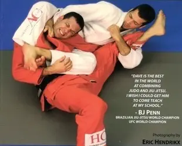

This roadmap covers your 2026 sessions — #45 through #53. It shows what we have covered, where you currently are, and what your next meaningful step looks like.
There is an important context to your roadmap: some material that would typically appear earlier in a student's progression was not covered under your previous coach, due to the physical limitations that restricted the range of techniques he was able to teach. This has been noted where relevant and we have been filling those gaps deliberately as part of your 2026 work. This is not a criticism of previous training — it is simply useful information for planning where to go next.
Your opening 2026 block built out the top game — creating submission dilemmas from dominant pinning positions:
The fundamental operating principle that sits over all technique:
This session established the lens through which all future techniques make sense. If something is not working, come back to this: are you fulfilling the job of the position you are in?
Moving from understanding positions conceptually to applying their functions in practice:
What happens when your partner stands up inside your guard — and how to have a pre-mapped response for each version of that:
This is a funnel — each response by your partner leads to a specific attack. You do not need to decide which to use; their feet tell you.
Attacking and surviving the turtle position — a position your previous training had significant gaps around:
Session #52 addressed a significant gap — one that came directly from the limited range your previous training covered. You asked what to do when inside someone's closed guard. This is core BJJ material that is worth understanding thoroughly:
Session #53 (2 Apr 2026, with Daryl) used CLA games to build automatic guard retention — the instinctive movement layer that sits underneath all technique:
Session #54 (1 May 2026) returned to the top game with deeper attack architecture — funnels as a decision framework, defensive survival from bottom mount, and expanding the submission menu from S-Mount:

The arm-over variation of the arm triangle. Where kata gatame traps the near arm under your neck, jigoku jime passes your arm over the partner's far arm to complete the strangle — a useful counter when they defend the standard entry by hiding their near elbow.
Once the two-way game runs consistently: systematic submission dilemmas from every dominant position — not hunting single taps, but creating situations where your partner must choose which threat to defend and is wrong either way.
Your top game is now significantly expanded. The upgrade is connecting both directions into a consistent, pressure-tested game.
Your 2026 progression has been systematic and methodical — 10 sessions covering a wide range of material cleanly. The next step is depth over breadth: fewer new techniques, more live application of what is already there.
From Session #47. This is the check for every position. If you are on top and not pinning, you are not fulfilling the top job. If you are on bottom and not destabilising, you are not fulfilling the bottom job. Ask which job you are in before you ask which technique to use.
From Session #50: the standing-partner funnel is not a choice — it is a read. One leg: armbar. Both feet: K-Guard, Star, or Lumberjack based on their angle. Stop deciding, start reading.
From Session #52: head, eyeline, tailbone. If your posture breaks, everything else breaks too. Every attack the bottom player has is set up by breaking your posture. Keeping it is how you prevent the problem before it starts.
From Session #53: guard retention is not about strength or speed. It is about angle. Spine perpendicular to your partner's hip line as they move is the geometric answer to almost every passing attempt. Learn this body shape and it becomes automatic.
From Session #54: a funnel organises your attack options into a decision tree driven by your partner's responses. You do not decide which submission to use — your partner's reaction decides it for you. Your job is to read that reaction quickly enough to follow it. When you miss a tap, ask what the partner did and what that opens next — that is the funnel updating itself.